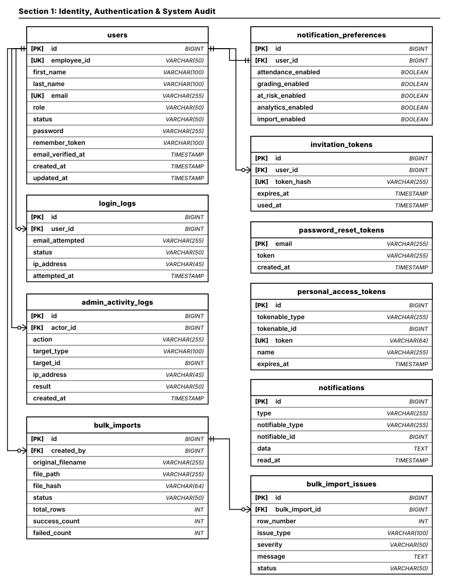
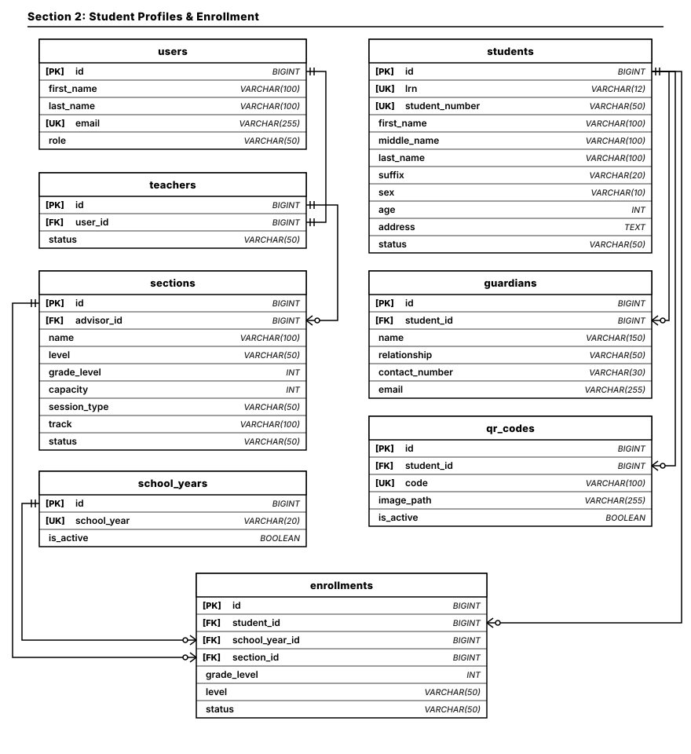
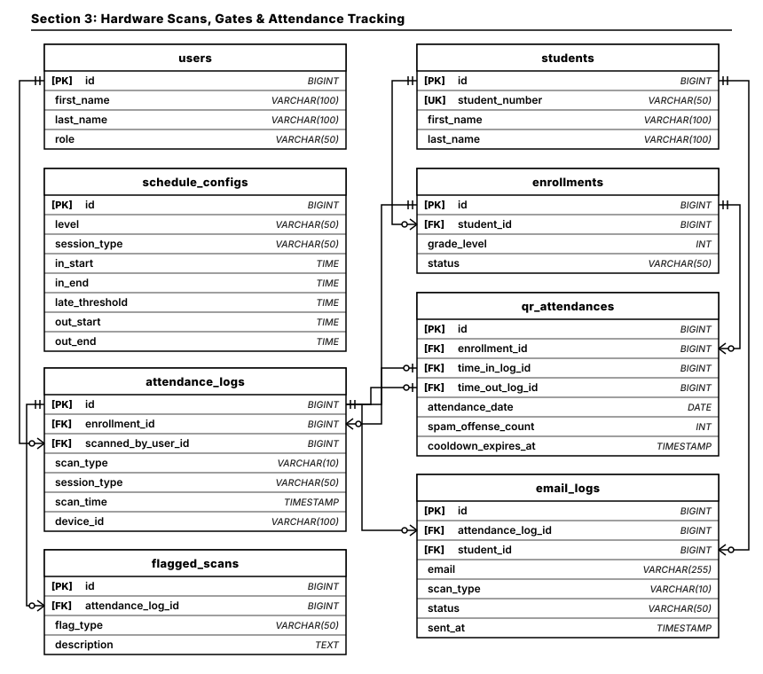
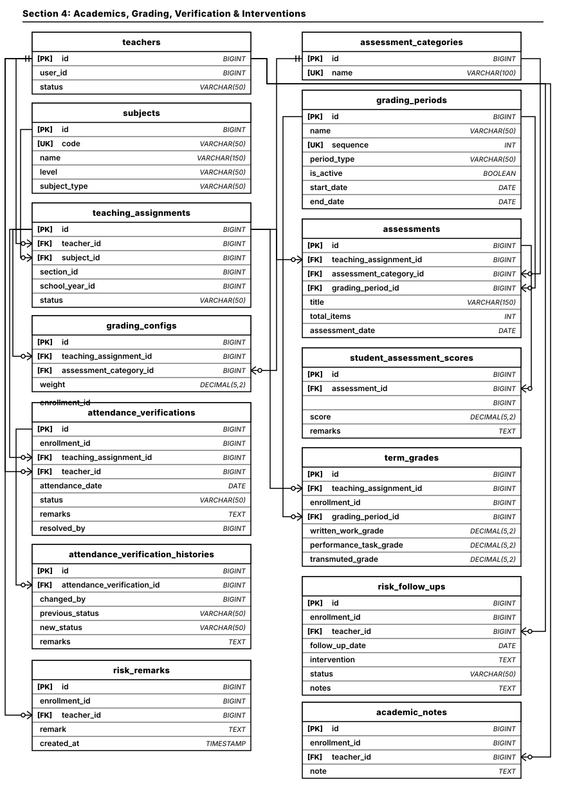

Section 1: Identity, Authentication & System Audit
10 entities • Users, login audit logs, security activity, tokens, bulk imports

Section 2: Student Profiles & Enrollment
8 entities • Student master records, guardians, QR badges, academic sections, enrollments

Section 3: Hardware Scans, Gates & Attendance Tracking
8 entities • Kiosk hardware logs, daily QR attendances, cooldown timers, flagged scans, guardian email logs

Section 4: Academics, Grading, Verification & Interventions
14 entities • Teacher assignments, DepEd grading configs, assessments, scores, term grades, verifications, interventions
